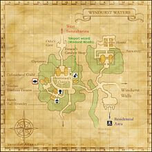
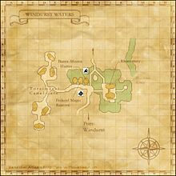

Description
Windurst Waters is a city area in Windurst.
Map

NPCs
- A.M.A.N. Liaison
- Ahyeekih
- Ajen-Myoojen
- Akee Yonji
- Akkeke
- Amagusa-Chigurusa
- Angelica
- Anja-Enja
- Aora-Uora
- Aramu-Paramu
- Arukoko
- Atmacite Refiner
- Baehu-Faehu
- Baren-Moren
- Bondada
- Buchi Kohmrijah
- Bulolo
- Caliburn
- Chamama
- Chomo Jinjahl
- Chomoro-Kyotoro
- Churano-Shurano
- Chyuk-Kochak
- Clais
- Cochal-Monchal
- Dabido-Sorobido
- Dagoza-Beruza
- Damami-Karumi
- Dienger
- Diroku-Oroku
- Eight of Hearts
- Enrefort
- Ensasa
- Ephemeral Moogle
- Five of Hearts
- Foi-Mui
- Fomina
- Four of Hearts
- Fuepepe
- Funpo-Shipo
- Furakku-Norakku
- Furan-Furin
- Gantineux
- Gevirun-Gabirun
- Gordias
- Hakeem
- Hariga-Origa
- Hilkomu-Makimu
- Hobibi
- Honoi-Gomoi
- Hororo
- Isanie
- Jack of Hearts
- Jacodaut
- Janta-Jonta
- Jatan-Paratan
- Jourille
- Karuru
- Kayeel-Payeel
- Kenapa-Keppa
- Kerutoto
- Khoto Rokkorah
- Khuta Colaara
- Kipo-Opo
- Kirarara
- Kobite-Mojite
- Kogri-Nargri
- Koko Lihzeh
- Koowawa
- Kopopo
- Kotan-Moritan
- Kuesoso
- Kyokyo
- Kyume-Romeh
- Lago-Charago
- Leepe-Hoppe
- Lumomo
- Machitata
- Majiji
- Maqu Molpih
- Mashishi
- Mashuu-Ajuu
- Maysoon
- Mejina-Monjina
- Mimomo
- Miriri
- Moari-Kaaori
- Moitoto
- Mokyokyo
- Moreno-Toeno
- Myumimi
- Naiko-Paneiko
- Nasoh Joli
- Ness Rugetomal
- Nine of Hearts
- Npopo
- Ohbiru-Dohbiru
- Okaka
- Olaky-Yayulaky
- Orez-Ebrez
- Orn
- Otete
- Pakesse-Myukesse
- Paku-Nakku
- Panaa Fom
- Panna-Donna
- Pechiru-Mashiru
- Pia
- Piketo-Puketo
- Pojimo-Rojimo
- Porupen-Kyurupen
- Prestapiq
- Pulykiki
- Puroiko-Maiko, W.W.
- Pursuivant
- Qhum Knaidjn
- Queo-Paeo
- Rabiri-Tabiri
- Ramasese
- Ranpi-Monpi
- Reh Hapli
- Ropunono
- Rukuku
- Sahgi Konchumih
- Serukoko
- Seven of Hearts
- Shanana
- Shante-Fante
- Shasha
- Shataru-Potaru
- Shatoto
- Shohrun-Tuhrun
- Six of Hearts
- Sohdede
- Synergy Engineer
- Synergy Enthusiast
- Taajiji
- Tauwawa
- Temoe-Amoe
- Ten of Hearts
- Tonana
- Torikoko
- Tosuka-Porika
- Tsuran-Botaran
- Upih Khachla
- Voidwatch Officer
- Voidwatch Purveyor
- Yohra-Ora
- Yomotsutsu
- Yuli Yaam
- Yung Yaam
- Zabirego-Hajigo
- Zelala
Maps

Story walkthroughs in this area
| Story | Mission / quest |
|---|---|
| CoP 3-3 | The Road Forks |
| CoP 3-3B | Memories of a Maiden — Windurst branch |
| CoP 5-3U | Where Messengers Gather — Ulmia’s Path |
| WotG B-07 | Quelling the Storm |
| WotG 41-2 | Her Memories: Of Malign Maladies |
| ASA 1 | A Shantotto Ascension |
| ASA 2 | Burgeoning Dread |
| ASA 14 | An Uneasy Peace |
References
External references describe their own server or retail rules. Documented Zenith changes take precedence.
Map credits: Map 1 — HorizonXI Wiki · Map 2 — HorizonXI Wiki. Original game maps © SQUARE ENIX; redrawn maps retain the credited authorship and license.


Supplemental NPC names and exits are from the base-world snapshot; expansion conditions can affect availability.
Additional level-75 reference
|
This massive district to the west of the Blacktea River, lies along the western edge the Federation of Windurst. Along with a variety of Shops, the Cooking Guild is located in the nothern half of the zone, next to the Tavern and Hostelry. Also contained within this district are a variety of official government departments, including the Aurastery (Magic School), the Optistery (The Library of Magic), and the Rhinostery (living organism research).
Connecting Areas
|
  |


Quests Started Here
Fishing
| All Watersides | Cap |
|---|---|
| 7 | |
| 11 | |
| 29 | |
| 56 | |
| 0 | |
| 0 | |
| 0 |
NPCs Found Here
|
|
Adapted from Eden Wiki: Windurst Waters · Contributors and history · CC BY-SA 4.0. Revision 45581. Layout, links and optional background text adapted for Zenith.